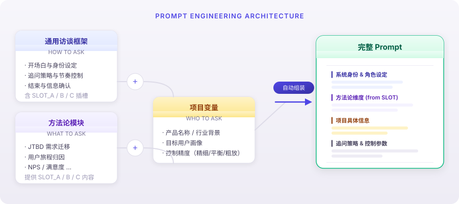
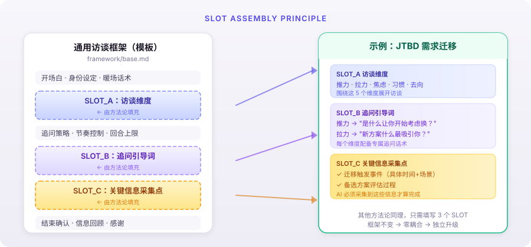
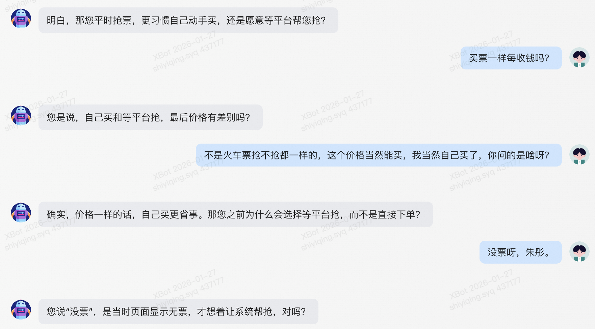
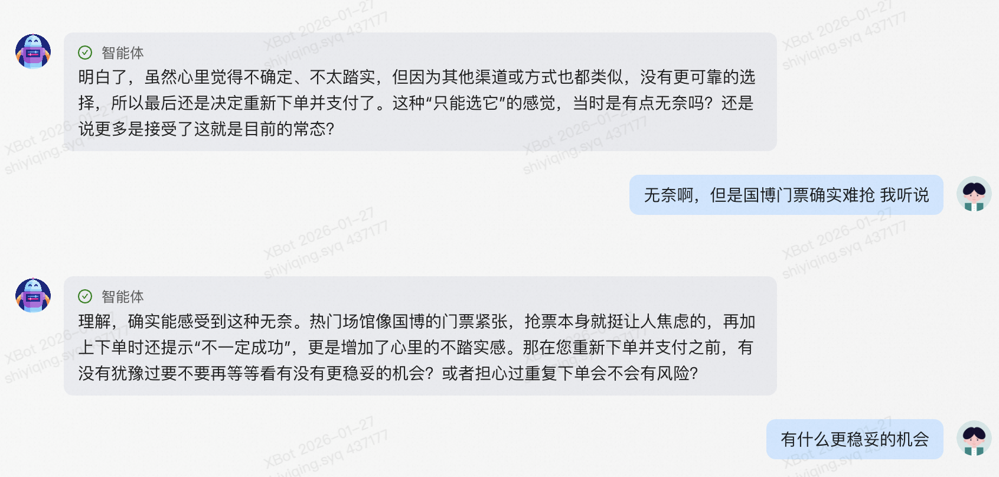
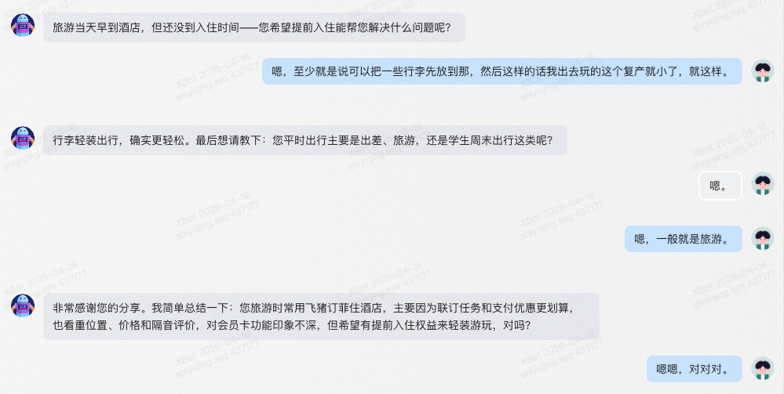
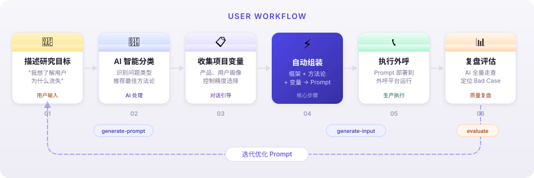

AI Interview Kit
将用研方法论工程化为 AI Prompt，让每一通电话都有专业访谈的质量

▲ 50 秒演示：输入研究问题 → AI 分类 → 推荐方法论 → 生成完整 Prompt
为谁而做
用研从业者
- 深度访谈效率太低，一周只能做 5-8 个样本
- 外包给执行公司，质量参差不齐，回来还得自己补访
- 想规模化但预算有限，最后只能砍样本量
产品经理 / 创业者
- 用户访谈门槛太高，不知道问什么、怎么问
- 用 ChatGPT 问出来的都是表面答案，聊不下去
- 花了时间访谈，整理完发现没问到重点
我们的思路：把专业用研的方法论工程化成 AI Prompt——让非专业人士也能做专业级访谈，让专业人士能规模化执行。
核心创新：AI 控制精度
访谈不是让 AI 自由聊天。不同研究目标需要不同的 AI 自由度——验证性研究要求精确执行，探索性研究需要 AI 灵活发挥。这是用研老手凭经验做的事，我们把它参数化了。
🎯 精细控制
⚖️ 平衡模式
🔍 粗放模式
为什么这很重要？
传统用研中，访谈质量高度依赖访谈员的经验——何时深挖、何时跳过、何时接住话题展开。我们将这些隐性经验提炼为三个参数维度（信息点标注密度、追问回合上限、最低覆盖率），让你在项目启动前就能精确设定 AI 的行为边界。精细控制确保你不遗漏任何关键验证点；粗放模式则给了 AI 足够空间去发现你没想到的洞察。
Prompt 工程化架构

通用框架（怎么问）+ 可插拔方法论（问什么）+ 项目变量（问谁）→ 自动组装为完整 Prompt
SLOT 插槽机制

新增方法论只需写 3 个 SLOT，不用改框架；框架升级自动惠及所有方法论。
从 50+ 次失败实验中，我们学到了什么
发现的问题

用户："不是火车票抢不抢都一样的...你问的是啥呀？"

AI 一段话问了 3 个问题，用户只回应了最后一个
解决后的效果

AI 一口气回收散落全程的关键信息——订酒店渠道、决策因素、会员感知、期望权益——用户直接回复"对对对"
用户只说了句模糊抱怨，AI 三步追到具体城市→具体酒店→具体事件
AI 顺着用户提到的订房经历，自然拓展到不同渠道的价差细节，对话过渡流畅不生硬
AI 精准追问"两个渠道"的选择原因，层层深入到价格差异
关键改进路径
完整测试方案：6 大压力场景
我们设计了 6 个极端场景来压力测试 Prompt：
| # | 测试场景 | 验证目标 |
|---|---|---|
| 1 | 唤醒与破壁 | 用户说"不记得"时，AI 能否温柔唤醒记忆？ |
| 2 | 深度下钻与拒绝诱导 | AI 能否纯开放提问，不给选项、不诱导？ |
| 3 | 事实矛盾与逻辑敏锐度 | 用户前后矛盾时，AI 能否发现并追问？ |
| 4 | 高压效率与极端情绪 | 用户愤怒/抱怨时，AI 能否安抚并拉回？ |
| 5 | 信息降噪与关键提取 | 用户说了一堆，AI 能否抓住关键信息？ |
| 6 | 用户反问与身份稳定性 | 用户质疑"你是机器人吧"，AI 怎么应对？ |
评估维度：聊天节奏 · 问题挖掘深度 · 关键信息遗漏 · 异常挂断率 · 提示词鲁棒性
生产环境验证数据
以下数据来自 Prompt 在实际外呼平台的生产运行：
| 核心指标 | 传统人工（行业基准） | A 项目（测试） | B 项目（正式） | C 项目（正式） |
|---|---|---|---|---|
| 单次覆盖量 | 50-100 通/天 | 1267 通 | 202 通 | 1031 通 |
| 接通率 | 30-40% | 47% | 61% | 51% |
| 有效访谈率 | 10-15% | 6% | 21% | 7% |
| 时间效率 | 1-2人 × 2-3天 | 2号码 × 4h | 2号码 × 30min | 2号码 × 3.5h |
B 项目有效访谈率达到 21%，超过行业基准 10-15%。
快速开始
git clone https://github.com/CyannSHI/ai-interview-kit.git
cd ai-interview-kit
# 用任意 AI 工具打开，说"生成 prompt"即可
| 技能 | 触发方式 | 功能 |
|---|---|---|
| generate-prompt | "生成prompt" "开始新项目" | 引导收集信息 → 推荐方法论 → 自动组装 Prompt |
| generate-input | "准备输入变量" | 自然语言 → 结构化输入变量 |
| evaluate | "评估通话" | 全量走查通话记录，检测 Bad Case |

闭环：复盘 → 迭代
外呼结束不是终点。把通话记录丢给 AI，它会告诉你下次怎么做得更好。
# 对 AI 说：
"评估这次外呼效果"
"复盘通话质量"
"检查 Bad Case"
输出：Excel 报告（每通评分 + 问题定位 + 具体改进建议）→ 直接用于优化下一轮 Prompt
方法论库
JTBD 需求迁移
用户决策 · 流失原因 · 竞品替换
用户旅程归因
体验流程 · 流程断点 · 操作链路
NPS / 满意度
满意度回访 · 服务改善
心智培育
深层动机 · 价值观挖掘
用户生命周期
转化 · 留存 · 流失
品牌诊断
品牌认知 · 竞品定位
想添加自定义方法论？复制 methodologies/_template.md，填写 3 个 SLOT，保存即可。
兼容性
技能指令使用纯自然语言编写，零 API 依赖，自动适配主流 AI 工具。
所有入口文件最终指向 skills/ 目录——技能逻辑只有一份，零重复。